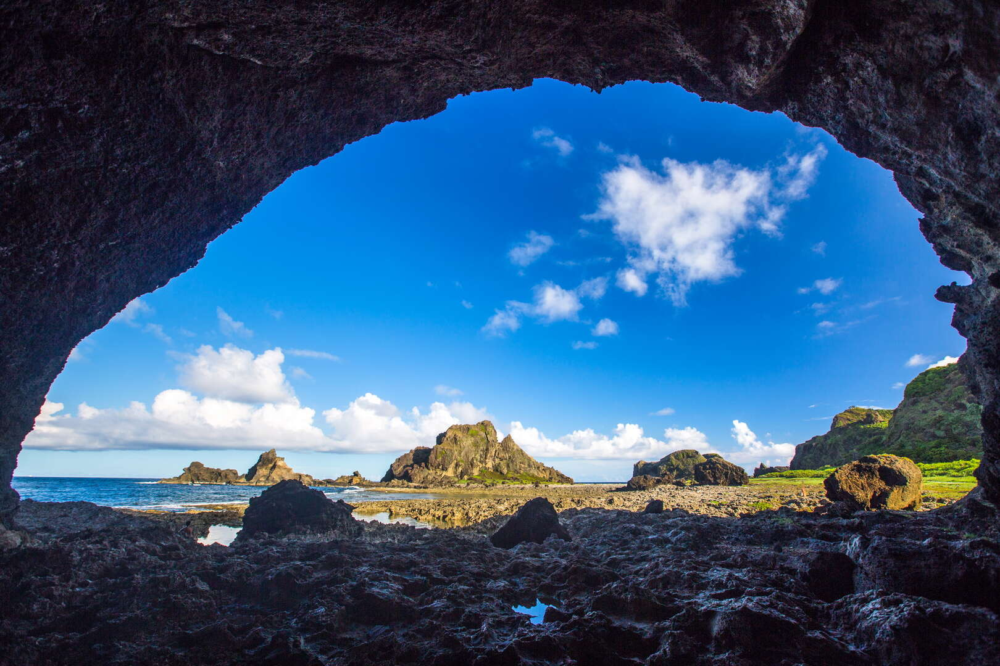

Eco Echo
Wangong Dong Sea Cave · Green Island
Located on the eastern coast within the historic Yuzihu area, Wanggung Cave is the largest natural sea-eroded arch on Green Island. Formed over centuries by the relentless pounding of Pacific waves against volcanic basalt, this majestic rock formation stands as a striking testament to the island's dynamic geological history.
Looking out from the dark, cool interior of the cave, the massive arch perfectly frames the vibrant blue sky and crashing waves, earning it the popular nickname "The Eye of Green Island." This unique natural lens creates a dramatic visual contrast, making it a coveted destination for capturing the juxtaposition of shadowed volcanic rock against the brilliant azure ocean.
Beyond its daytime grandeur, the cave serves as a peaceful sanctuary where the echoing sound of the tides creates a serene coastal symphony. At night, completely sheltered from light pollution, the ancient stone arch transforms into a spectacular frame for stargazing and Milky Way photography, beautifully connecting the island's raw geology with the open cosmos.